Ang galing ko noh? Ginawa ko 'to kasi wala akong maibigay na material na bagay para sa'yo, pero I hope nagustuhan mo. Alam mo, mahal na mahal kita, bebi. Sorry sa lahat ng pagkukulang ko. Happy 7th monthsary, bebi. Para bang nung October 2024 lang inaalok pa lang kita ng insurance, pero ngayon 7 months na tayong magkasama — through ups and downs.
Im hoping, actually hindi hoping gusto ko na ikaw na yung taong DARATING sa buhay ko na masasabi kong dumating na kasi ikaw na yung gusto kong PALAGI nasa tabi ko bebi ako yung magiging PALAGI mo na nakasupport sayo may away man tayo or wala gagawa tayo ng SARILING MUNDO natin na IKAW AT AKO lang ang mag kasama na masaya in short yes bebi ikaw na yung gusto kong isettle na hanggang dulo ikaw na yung gusto kong pakasalan sa buhay ko after ko gumraduate kaya kahit ano mang away natin kapit lang ha? May mga problem man tayo ngayun pero naniniwala ako na babalik din yung DATING TAYO at naniniwala ako na ang TULAD MO ang dapat pakasalan ko.
Mahal na mahal talaga kita, bebi. I love you so much. Happy 7th monthsary. Thank you sa lahat mahal na mahal kita pasensya na sa mga pag kukulang ko im always here for u. I love you so much and i really miss you
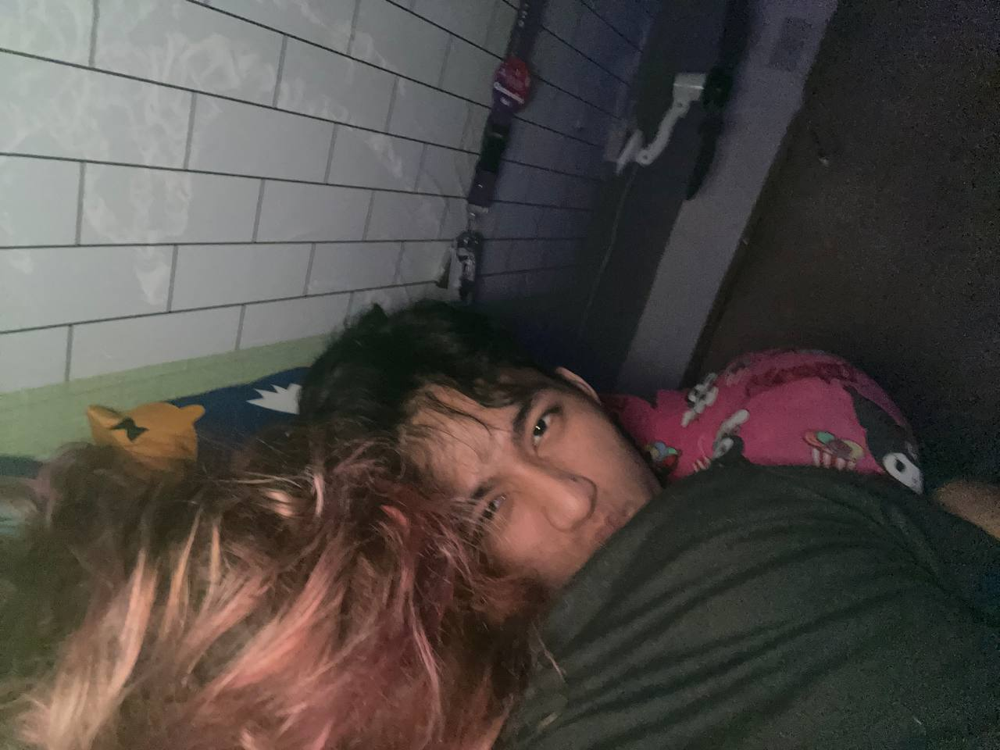
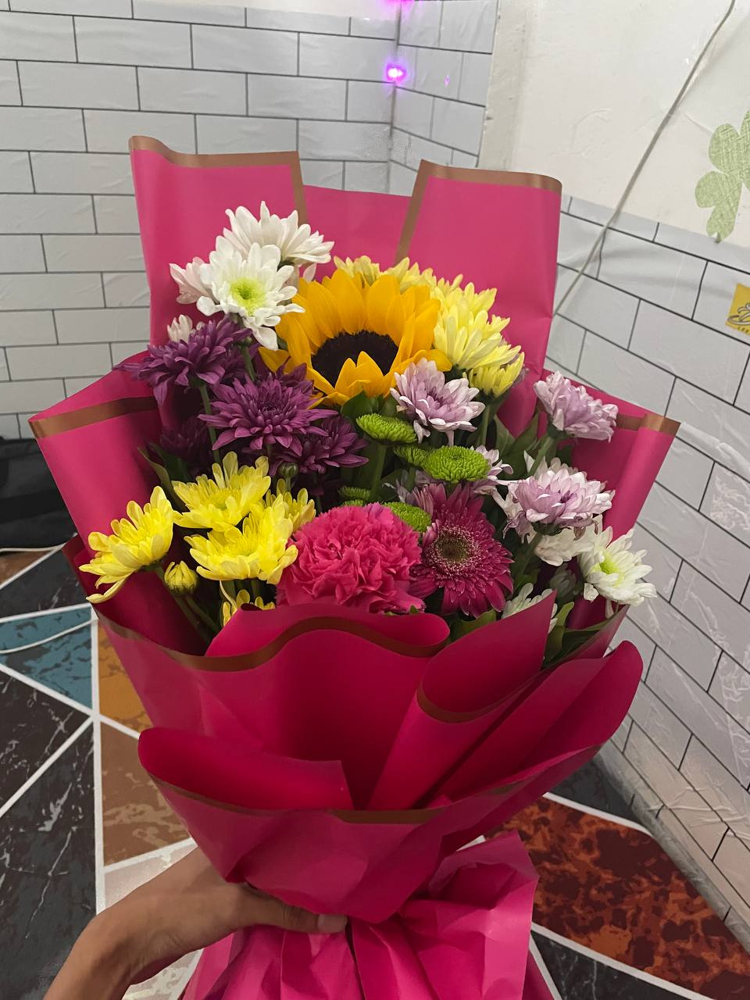
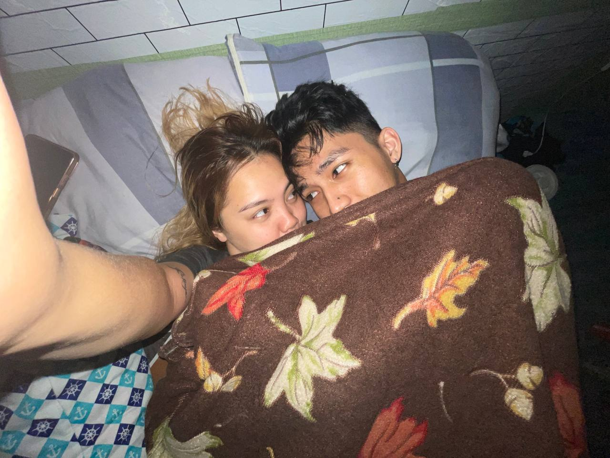
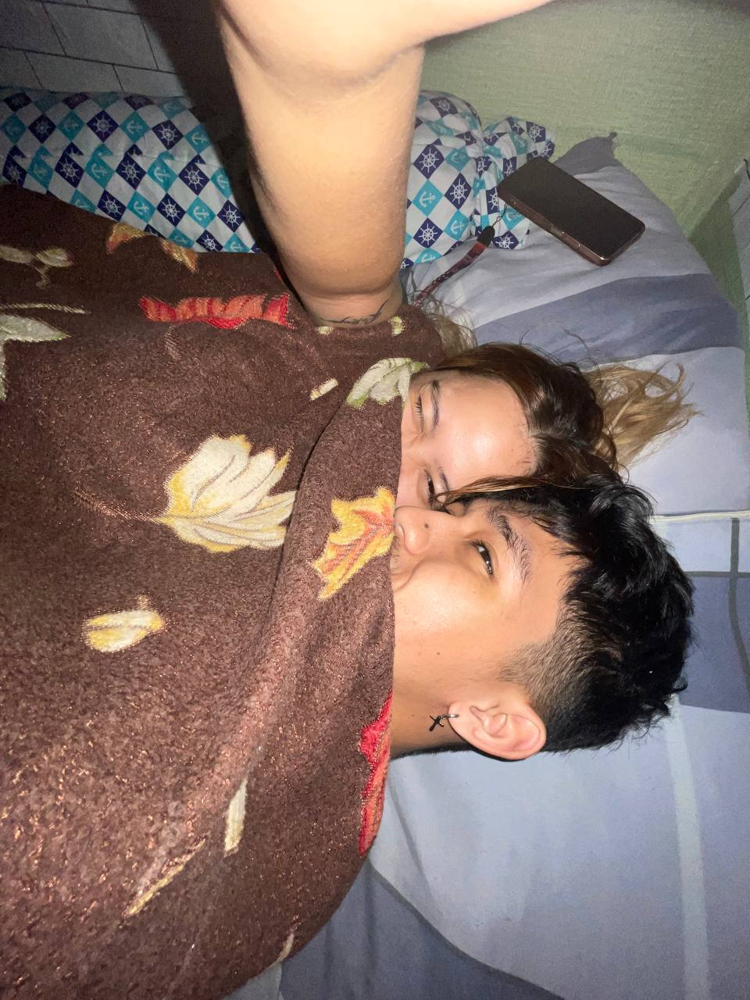
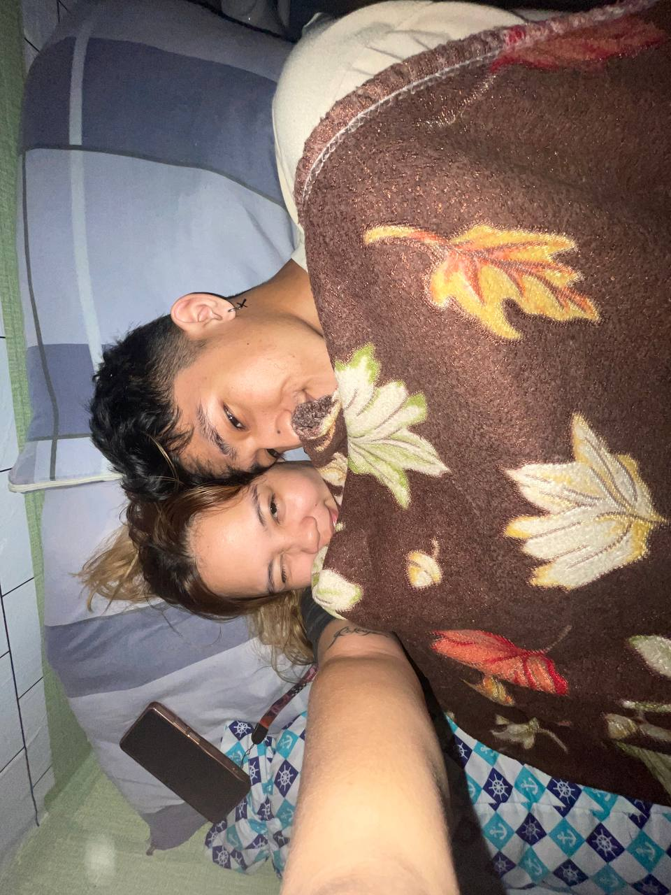
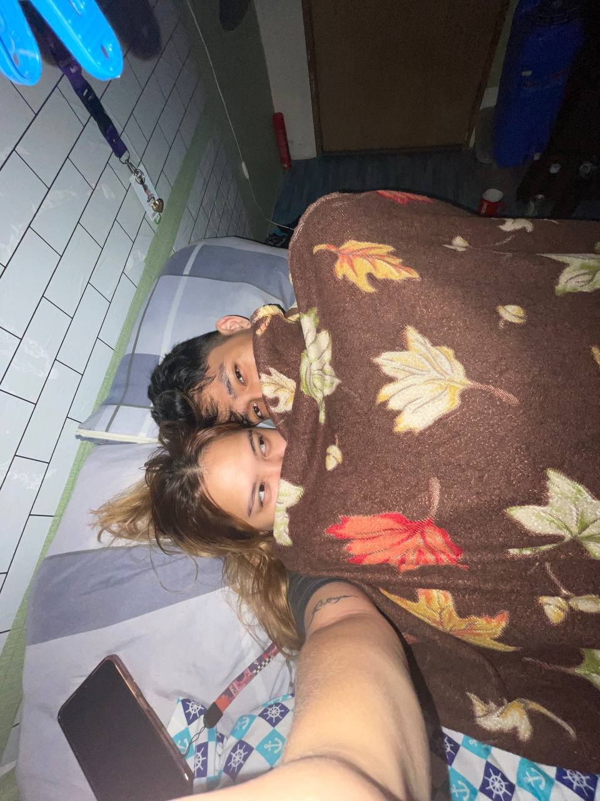
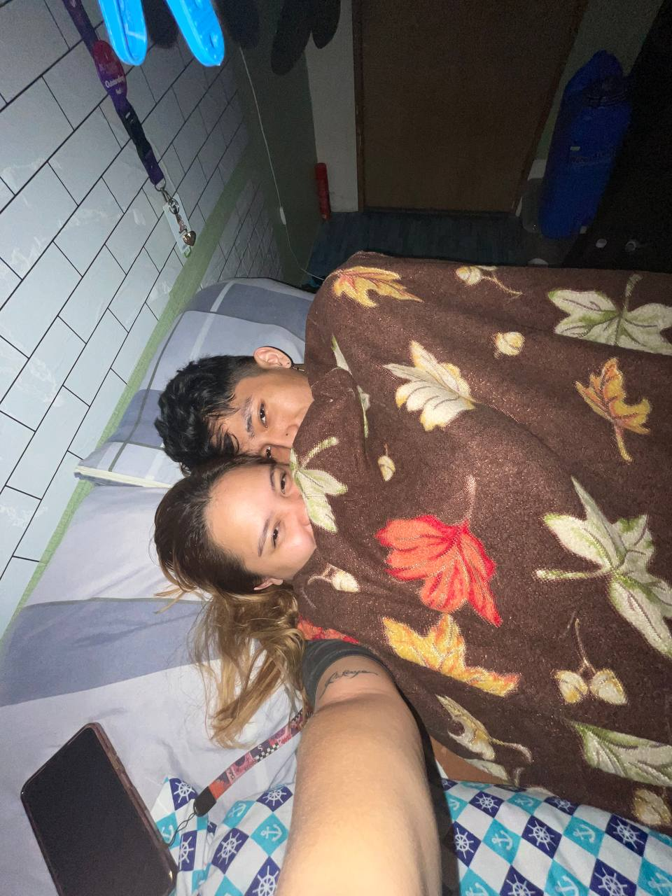
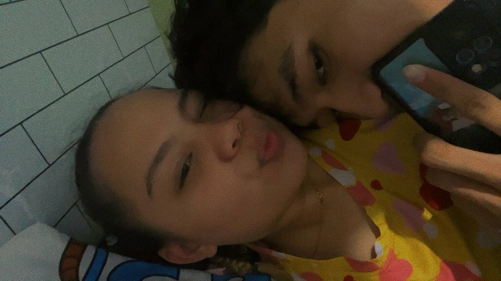
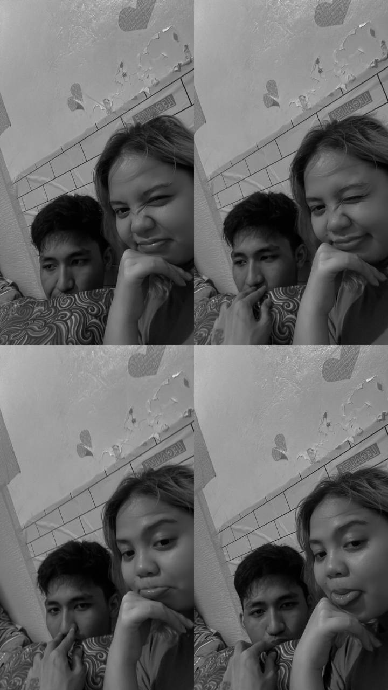
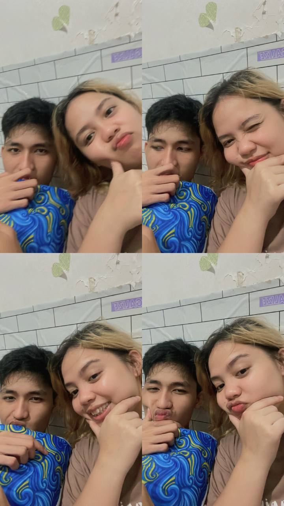

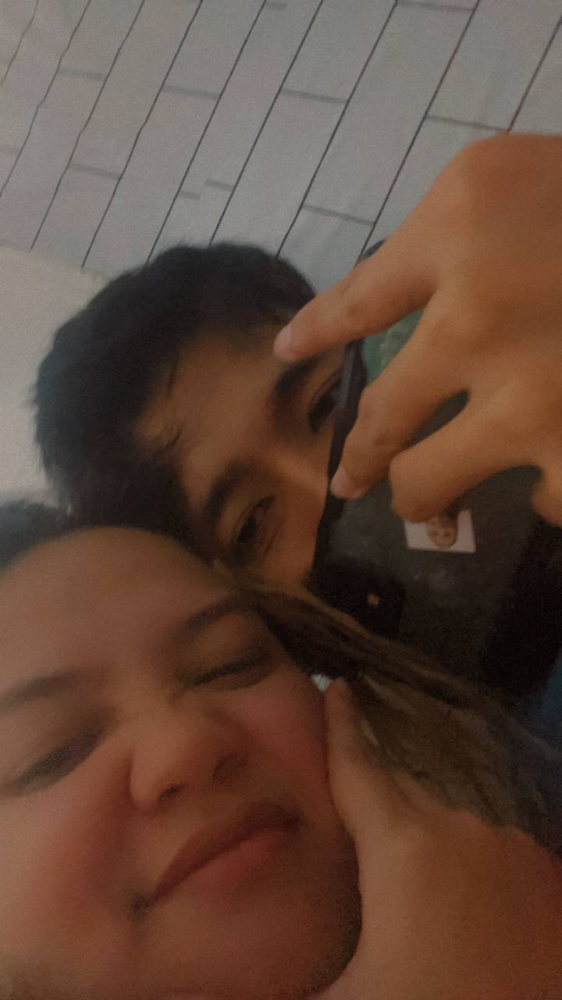

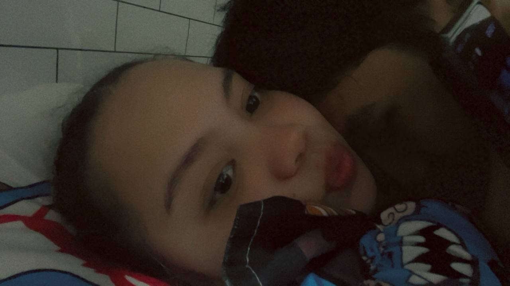